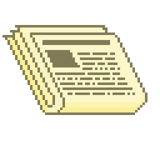

Al ver el objeto que traías entre manos, Saimon no pudo contener la emoción y por eso trató de entablar una conversación contigo.
Notas que está demasiado emocionado. Habla muy rápido, no pronuncia claramente y se expresa con vacíos, es difícil entenderle.
De repente, saca de su bolsillo un extraño objeto de una fibra extraña: un “periódico”. Se puede doblar y estirar. Es suave,
pero puede ser bastante sólido a la vez. Es delicado, pero filoso.
Nunca habías experimentado antes nada igual.